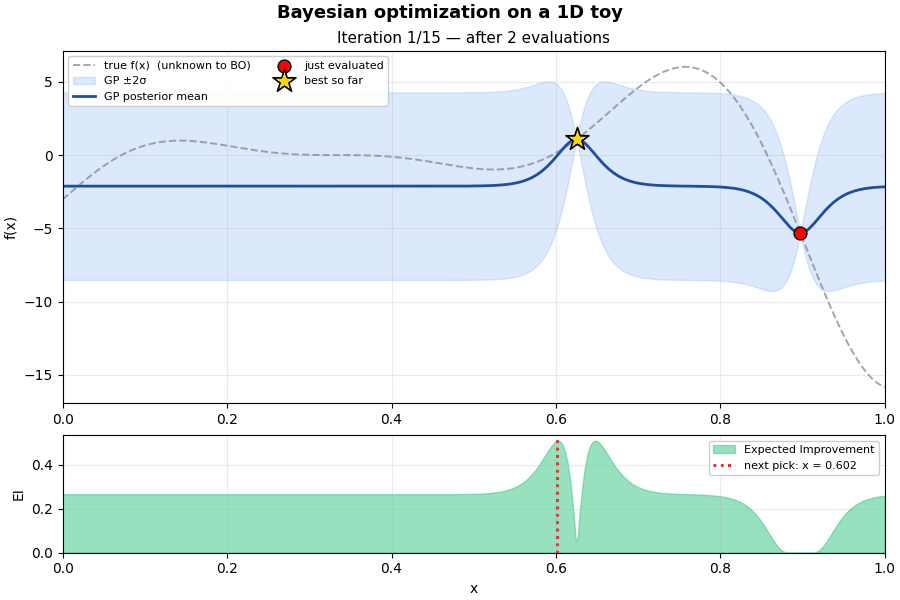
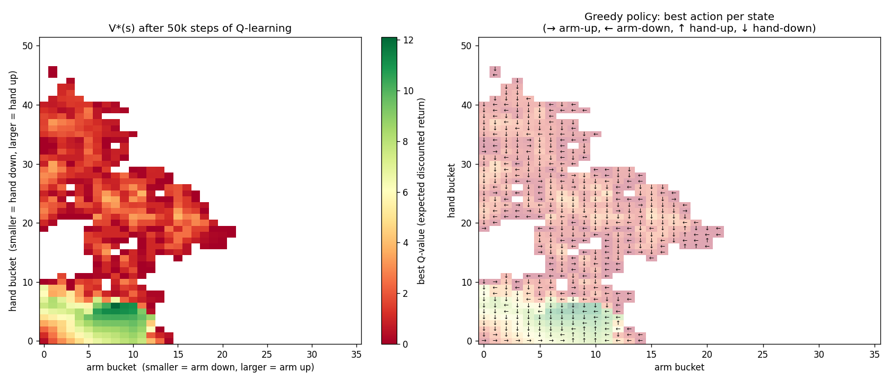
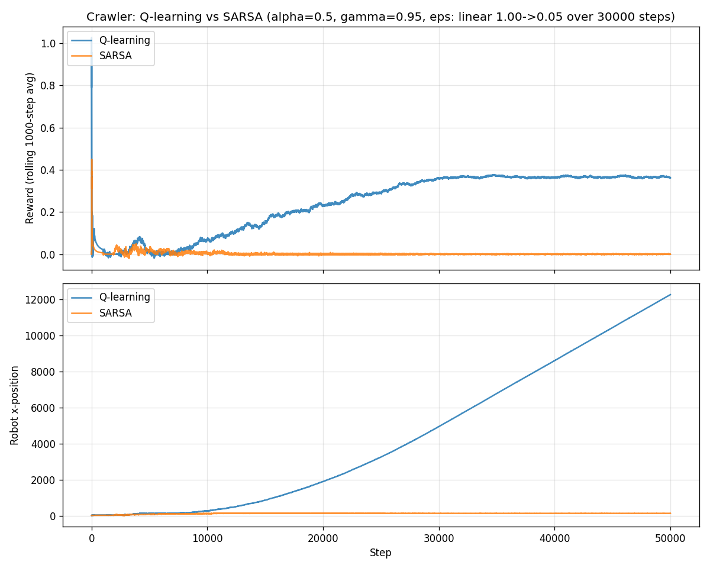
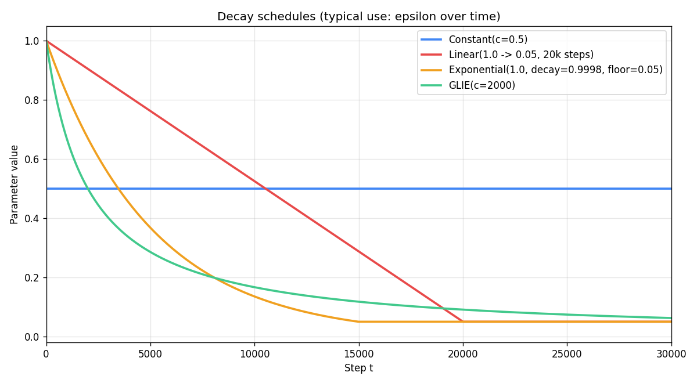
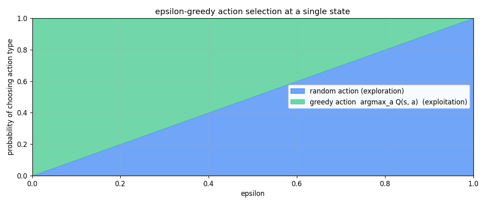
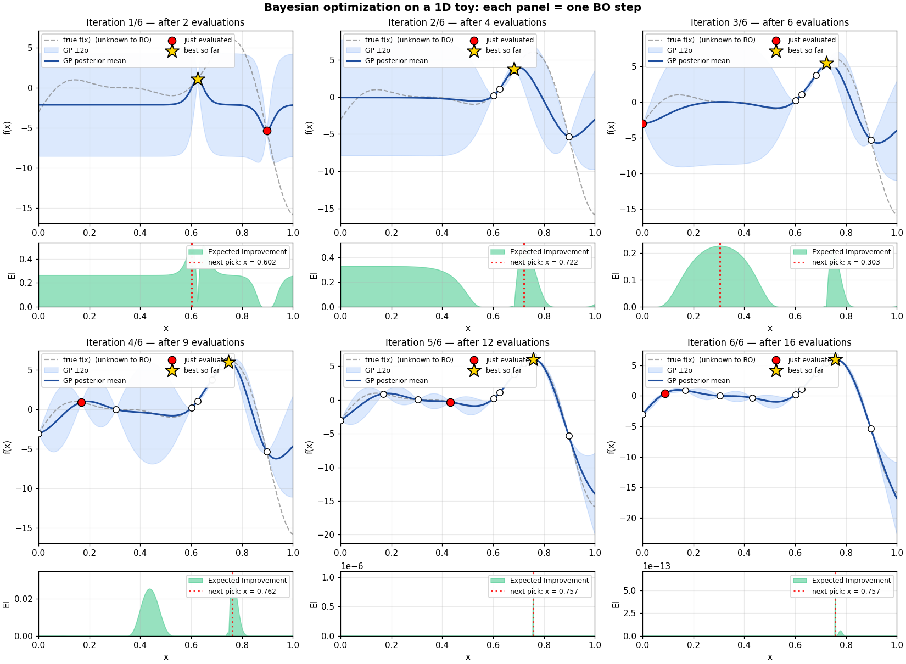
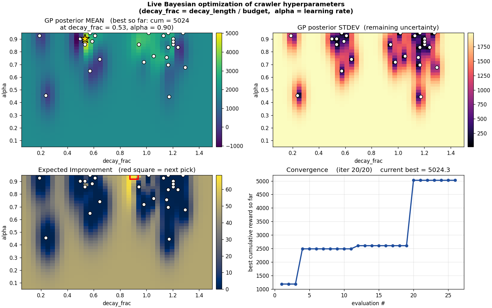

robot-arm-sim
A pedagogical reinforcement-learning playground. Teach a planar crawling robot to walk; visualize how it learns; cross-validate decay schedules; let Bayesian optimization tune the hyperparameters live.

The simulator
The crawler is a wheeled body with a two-link limb — an arm (upper segment) and a hand (lower segment), both pivoting to discrete angles. When the lowest tip is below ground, the geometry produces forward displacement; when above, the robot doesn't move. There's no friction model — only kinematic displacement.
State
A pair of discrete bucket indices
(arm_bucket, hand_bucket). The arm has
nArmStates = 36 buckets across its range; the
hand has nHandStates = 52. Total:
1,872 possible configurations.
Actions
Up to four moves: arm-up, arm-down,
hand-up, hand-down. Boundary states
offer fewer (e.g., at arm_bucket = 0 you can't
go further down).
Reward
Signed forward displacement caused by the action. Typically in $[-1, +1]$ per step. Going backward gives a small negative reward; pushing the body forward gives a small positive one. Most steps are very small in magnitude — credit assignment is the entire challenge.
Episode
The episode never ends. Learning here means maximizing the long-run rate of forward progress (average reward per step), not winning a finite-horizon game.
The agents
Two RL agents ship in this repo. They look nearly identical from outside. Internally they disagree on one small but consequential thing — what to assume about the next action when updating their value table.
🤖 Q-Learning Karen
- Class
- Off-policy
- Mantra
maxa' Q(s', a')- Strategy
- "Assume I'll always do the smartest thing from here."
- Strengths
- Fast learner, optimistic, propagates good news.
- Weakness
- Can be reckless in stochastic environments.
Update: $Q(s,a) \leftarrow Q(s,a) + \alpha\, [r + \gamma\,\max_{a'} Q(s', a') - Q(s,a)]$
🤖 SARSA Sam
- Class
- On-policy
- Mantra
Q(s', a'), sampled- Strategy
- "Plan for what I'll actually do next, exploration and all."
- Strengths
- Safer, conservative, great when bad moves are costly.
- Weakness
- Slow under high exploration; can stall on this domain.
Update: $Q(s,a) \leftarrow Q(s,a) + \alpha\, [r + \gamma\, Q(s', a') - Q(s,a)]$ where $a'$ is sampled $\epsilon$-greedy.
What the agent actually learns
After 50k steps of Q-learning training under a linear ε-decay schedule, here's the learned $V^*(s) = \max_a Q(s, a)$ and the greedy policy direction at every visited state:

Right: greedy policy (arrows mark the best action at each visited state). The arrows form a repeating cycle in the high-value pocket: hand-down (↓) when the arm is forward, arm-down (←) to push, hand-up (↑) to lift, arm-up (→) to swing. That's locomotion.
Q-learning vs SARSA on the crawler
Train both agents under identical conditions ($\alpha = 0.5$, $\gamma = 0.95$, linear ε-decay from 1.0 to 0.05 over 30k of 50k steps). Same random seed, same budget. The result is striking:

This is not a bug. It's the off-policy/on-policy distinction playing out empirically. Q-learning's $\max$ keeps the bootstrap target optimistic; SARSA's sampled $Q(s', a')$ gets dragged down by known-bad actions under high $\epsilon$.
Decay schedules
Four schedule shapes ship with the repo:
Constant, Linear,
Exponential, GLIE. The
$\text{GLIE}(c)$ schedule, $\epsilon_t = c / (c + t)$, is the
one that satisfies the convergence conditions for tabular
Q-learning and SARSA.


Cross-validating the decay length
Which decay length is best? scripts/sweep_schedules.py
answers empirically: train Q-learning under several decay-length
values, with multiple seeds per cell, and compare the rolling
reward curves and the cumulative-reward distributions.

The optimum-vs-budget scaling law
Theory (GLIE, Robbins-Monro) gives the shape of the
schedule but not its scale. Does the optimal decay
length scale with the training budget? scripts/find_optimum.py
runs a multi-budget sweep to find out.

One-line takeaway. Theory gives you the shape of the schedule (GLIE / Robbins-Monro); the scale is roughly linear in the training budget with a problem-specific slope. For this crawler, that slope is $\approx 0.63$.
Bayesian optimization in 1D — intuition first
Before going to the 2D crawler problem, watch BO run on a 1D toy where the true objective is visible: $f(x) = -((6x - 2)^2 \sin(12x - 4))$ on $[0, 1]$, a textbook BO benchmark with a global max near $x \approx 0.76$ and a deceptive local max near $x \approx 0.15$.
Prefer to read the steps frame-by-frame? Here's the same data as a comic strip, at six key iterations:

Bayesian optimization on the crawler
Same algorithm, lifted to a 2D search space — $\texttt{decay\_frac}$
(decay length / budget) and $\alpha$ (learning rate). When you
run scripts/bo_optimize.py a four-panel matplotlib
window opens and updates after every evaluation.

On the run shown, BO's first non-random suggestion already beat every random sample. A second jump at evaluation 20 took the cumulative reward from ~2,500 to ~5,000 — a 2× improvement found by trusting the acquisition function to explore an uncertain corner.
Run it yourself
One-time setup:
git clone https://github.com/scottn66/robot-arm-sim.git
cd robot-arm-sim
brew install python-tk@3.14 # on macOS; otherwise the system Tk
pip install matplotlib scikit-learn scipy numpy pillowLive GUI with Inspector
cd src
python3 crawler.py
Watch the green robot animate while the embedded panel shows a
live $V^*(s)$ heatmap, a rolling reward curve, and live
$\alpha / \epsilon / \gamma$ readouts. Flip
agentType = 'sarsa' at the top of
graphicsCrawlerDisplay.py to swap learners.
Q-learning vs SARSA comparison
python3 src/train_compare.py
# writes docs/img/compare.png (or pass --out)Cross-validate decay length
python3 scripts/sweep_schedules.py
# writes docs/img/schedule_sweep.pngCharacterize the scaling law
python3 scripts/find_optimum.py
# writes docs/img/optimum_scaling.pngLive Bayesian optimization
python3 scripts/bo_optimize.py
# opens a live 4-panel matplotlib window
# writes docs/img/bo_landscape.png at the end1D BO intuition demo (this dashboard's hero GIF)
python3 scripts/bo_intuition.py
# writes docs/img/bo_intuition_1d.gif and .pngRead more
For the full pedagogical reference — agent stat blocks, the TD update mechanics, the failure-mode catalog, gamified quests, and the glossary — read docs/LEARNING_GUIDE.md (rendered nicely on GitHub).
The repo is at github.com/scottn66/robot-arm-sim. Issues and pull requests welcome.